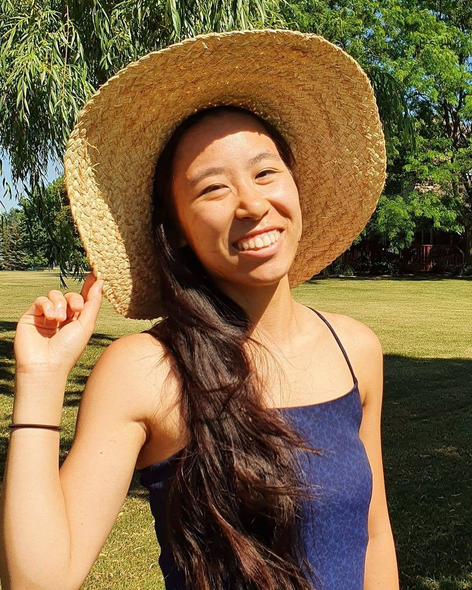

About me
My story
Lived experience, practical strategies, and a lifelong passion for mental health advocacy.
Living with bipolar disorder
From a young age, I struggled with my mental health and was eventually diagnosed with bipolar disorder. For much of my life, I wrestled with denial and existential crises, along with bouts of depression, mania, and everything in between. Once I accepted what I was facing and began learning and practicing coping strategies, my moods stabilized, and life became something I looked forward to rather than dreaded.

Why I coach
Because of my experiences, mental health advocacy and helping people on a personal level have become a life passion. I’m here to help you regain a sense of agency in your life and mental health by sharing proven strategies that have helped me and many others along the way.
I provide coaching with knowledge gained from my psychology degree, personal experiences, and skills I’ve learned through mental health programs I’ve attended.
Why I started Bipolar Gossamer
[Why I started the YouTube channel and community goes here.]
What coaching is, and isn’t
People often look for a peer coach because of relatability: someone who has been through it and found a way forward. That’s what I offer.
Life coaching is peer support, not therapy, psychiatric treatment, or crisis intervention. I do not diagnose, prescribe, or provide clinical care.
If you’re unsure whether coaching is the right fit, the “Am I the coach for you?” section explains who I can and can’t support.